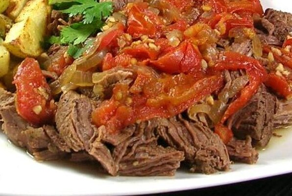

This wonderful dish has so much flavor. It reminds me of the great flavors of Colombian cooking. Slow-cooked, simmered steak makes this dish so tender and juicy! If you desire some heat, like I do, add a jalapeno pepper.
CYou can also substitute beer for half the water for another variation on the flavor. Serve over rice or with tortillas.
Ingredients
- 2 tablespoons corn oil
- 1 pound flank steak
- 1 large Spanish onion, thinly sliced
- 4 large cloves garlic, chopped
- 5 Roma tomatoes, chopped
- ½ teaspoon salt
- 2 teaspoons black pepper, or to taste
- 1 tablespoon curry powder
- 1 tablespoon seasoning salt
- 1 ½ teaspoons garlic powder
- 1 ½ teaspoons ground turmeric
- 1 ½ teaspoons pimenton (paprika)
- 1 ½ teaspoons dried oregano
- 1 ½ teaspoons ground black pepper
- 6 chicken thighs
- 4 potatoes, peeled and quartered
Directions
- Heat the corn oil in a skillet over medium heat. Gently lie the steak in the oil and cook each side until brown. Remove the steak to a plate. Add the onions, garlic, tomatoes, salt, pepper, and cumin to the skillet; cook and stir until the onions are tender. Return the steak to the skillet. Pour the water into the skillet. Stir in the crumbled bouillon. Bring the water to a boil and drop the heat to low; cover. Allow to simmer until the meat easily pulls apart with a fork, about 2 hours.
- SRemove the steak to a cutting board. Use two forks to shred the meat. Transfer to a serving plate. Pour the onion and tomato mixture from the skillet over the shredded beef.
Return to top
Return to main page